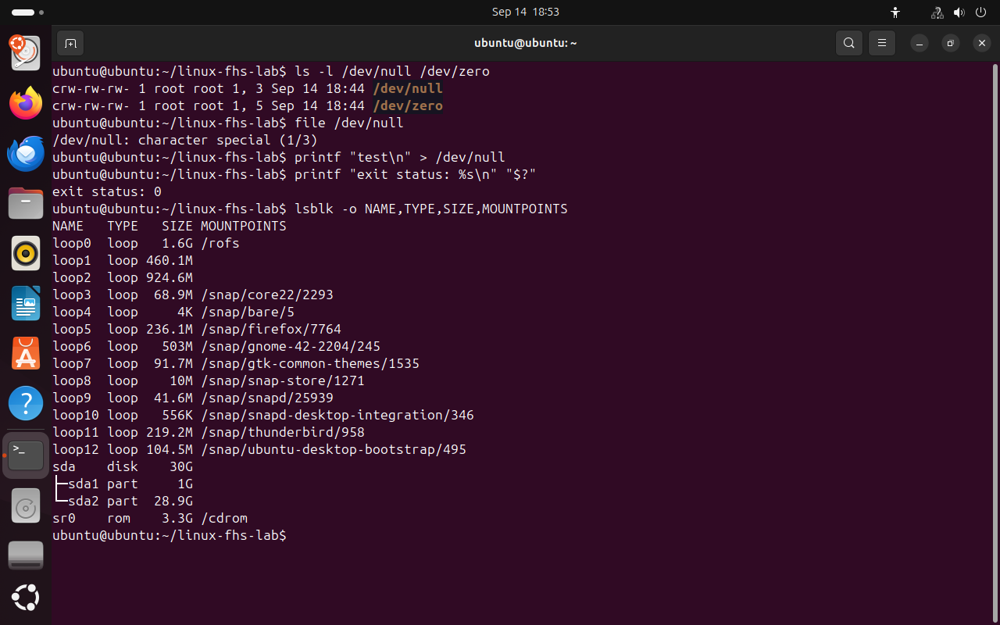
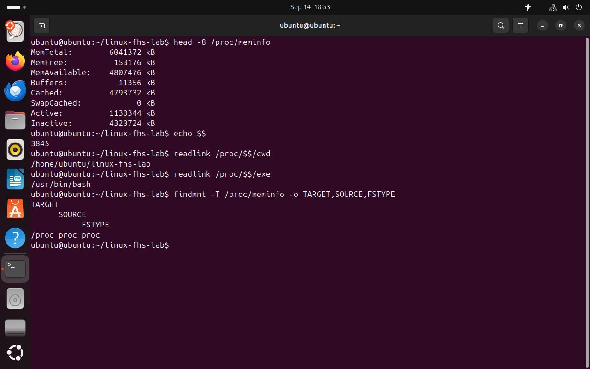
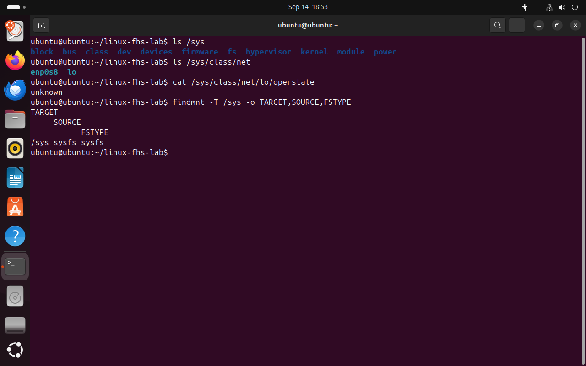

Файловое дерево как интерфейс к ядру
Прочитаем сведения об устройствах, памяти и текущем процессе через /dev, /proc и /sys.
/dev: устройства доступны через пути
/dev/null — символьное устройство. Запись в него успешно принимает и отбрасывает байты, а чтение сразу сообщает конец данных. Поэтому команда с перенаправлением в /dev/null может ничего не показать, хотя выполнилась успешно.
ls -l начинает строку символьного устройства с c, блочного — с b. Блочные устройства, например диски, работают с адресуемыми блоками. lsblk показывает диски, разделы и подключения; имя в виртуальной машине может быть sda, vda или другим.
Фраза «в Linux всё — файл» полезна как напоминание об общих операциях ввода-вывода, но не означает, что любой объект — обычный файл на диске. В этой практике мы записываем только в /dev/null; к устройствам дисков обращаемся для просмотра сведений.
- Где
- Терминал Ubuntu · Bash. Команды используют указанные пути; следуйте порядку главы.
- Действие
- Выполните команды по порядку и сравните наблюдение с проверкой.
ls -l /dev/null /dev/zero
file /dev/null
printf "test\n" > /dev/null
printf "exit status: %s\n" "$?"
lsblk -o NAME,TYPE,SIZE,MOUNTPOINTSСимвол c и ответ character special подтверждают тип /dev/null. Код 0 относится к предыдущему printf: запись прошла успешно.
{kind=link}

Объекты /dev/null и /dev/zero и список блочных устройств настоящей VM.
Нажмите на снимок, чтобы рассмотреть команды.Если после записи в /dev/null нет текста в терминале, означает ли это ошибку?
Нет. Вывод направлен в устройство, которое его отбрасывает. Для этой команды успешное завершение подтверждается кодом 0 в $? сразу после выполнения.
/proc: память и текущий процесс
/proc/meminfo выглядит как текстовый файл, однако данные формирует ядро при чтении. MemTotal — объём доступной ядру оперативной памяти; MemFree — полностью свободная память; MemAvailable — оценка памяти, доступной новым приложениям без свопинга. Последние два поля различаются из-за кэшей и других используемых, но освобождаемых областей.
Числовые каталоги /proc соответствуют PID процессов. В обычной интерактивной сессии Bash $$ — PID этой оболочки. Ссылка /proc/$$/cwd показывает её текущий каталог, /proc/$$/exe — исполняемый файл. Процесс завершился — его каталог исчезает.
Это состояние вашей VM в момент чтения. PID и числа памяти в отчёте должны быть вашими; совпадения со скриншотом не требуется. Некоторые сведения о чужих процессах могут быть ограничены правами.
- Где
- Терминал Ubuntu · Bash. Команды используют указанные пути; следуйте порядку главы.
- Действие
- Выполните команды по порядку и сравните наблюдение с проверкой.
head -8 /proc/meminfo
echo $$
readlink /proc/$$/cwd
readlink /proc/$$/exe
findmnt -T /proc/meminfo -o TARGET,SOURCE,FSTYPEПроверьте FSTYPE=proc. Перейдите командой cd ~ и повторите чтение cwd: путь изменится, а PID этой оболочки останется прежним.
{kind=link}

Ядро предоставляет показатели памяти и ссылки на состояние текущего Bash.
Нажмите на снимок, чтобы рассмотреть команды.Почему копия /proc/meminfo в домашней папке перестанет обновляться?
При копировании сохраняются байты, прочитанные в этот момент. Копия — обычный файл; она больше не является интерфейсом proc к ядру.
/sys: устройства и их свойства
/sys — точка подключения sysfs. Здесь ядро показывает устройства, драйверы, классы и их свойства. Один и тот же объект может быть доступен через несколько ссылок: это разные представления связей устройства, а не несколько физических адаптеров.
/sys/class/net группирует сетевые интерфейсы. lo — loopback, локальный интерфейс для связи внутри системы. Остальные имена зависят от оборудования и настройки: enp0s8, enp0s3, eth0 и другие. Поле operstate описывает операционное состояние; значение unknown у lo допустимо и само по себе не говорит о неисправности.
Многие объекты /sys допускают запись с привилегиями и меняют настройки ядра. В этой главе исследуем их чтением: для понимания структуры этого достаточно.
- Где
- Терминал Ubuntu · Bash. Команды используют указанные пути; следуйте порядку главы.
- Действие
- Выполните команды по порядку и сравните наблюдение с проверкой.
ls /sys
ls /sys/class/net
cat /sys/class/net/lo/operstate
findmnt -T /sys -o TARGET,SOURCE,FSTYPEНайдите lo и запишите остальные интерфейсы вашей VM. Подтвердите тип sysfs через findmnt.
{kind=link}

Сетевые интерфейсы представлены в sysfs как объекты класса net.
Нажмите на снимок, чтобы рассмотреть команды.Чем отличаются /proc и /sys в нашей практике?
Через /proc мы читали память и состояние процесса, через /sys — представление устройств и их свойств. Обе файловые системы предоставляются ядром, но организуют разные сведения.
Документация и происхождение кадров
Linux Foundation · FHS 3.0 · Canonical · usrmerge · GNU Bash · поиск команд · GNU Coreutils · Ядро Linux · proc · Ядро Linux · sysfs · Ядро Linux · tmpfs · findmnt · Microsoft · подключение тома к папке
23 кадра сняты непосредственно с дисплея VM Ubuntu-lab-01 через VirtualBox 14 сентября 2026 года. Ubuntu 24.04.4 Desktop ARM64, Live-сеанс, Bash. Команды выполнялись в настоящем терминале; оформление вывода не перерисовано. Описание среды и список кадров.